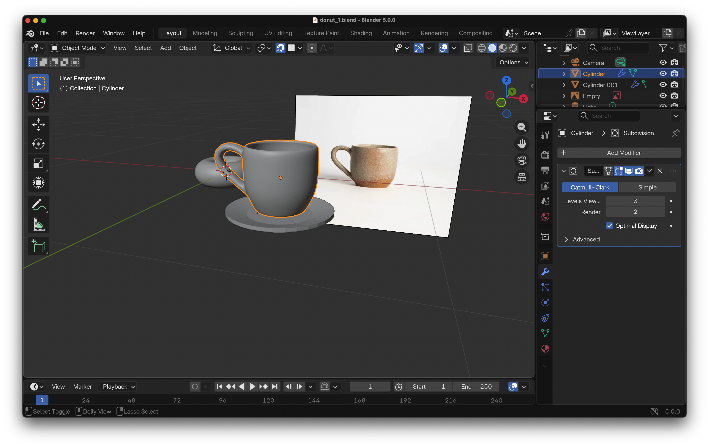

عندي قرار مهم ومصيري خدته. بعد ٦ سنين شغل، قررت أقفل "الديوان" الـ Co-working space بتاعي في بنها نهائيًا مع نهاية شهر ديسمبر الحالي ٢٠٢٥.
القرار ده مكانش سهل أبدًا، بس كان لازم يتاخد.
أنا بقالي من ٢٠١٩ بحاول أدخل وأبني كارير في مجال البيانات (Data Science). وكان ليا نصيب في ٢٠٢٣ إني أنضم للدفعة الأولى (Cohort 1) في برنامج داتا ساينس ALX Cairo. كانت تجربة عظيمة، بس بقالي سنة من وقت ما تخرجت ومعملتش إنترفيو واحد لحد دلوقتي، رغم إني بقدم على شغل باستمرار.
كان لازم أكون صريح مع نفسي. الـ Co-working space بتاعي، رغم إنه كان مشروع خاص وتربة كويسة، اتحول مع الوقت لـ "Comfort Zone" أو منطقة راحة. كان رابطني ببنها ومكتفني، وواخد وقتي وطاقتي ومانعني أركز على طموحي الحقيقي في مجال الداتا.
عشان كدا، أنا هبدأ سنة ٢٠٢٦ بذهن صافي وتركيز ١٠٠٪. أنا حاليًا متفرغ تمامًا لرحلتي في الـ Data Science، ومستعد أشتغل في أي مكان أو Remotely. وكمان بدأت أمارس هواية جديدة في الـ 3D modeling بشكل منتظم.
لأي حد في الـ Network عندي: أنا جاهز للشغل، ومستعد جدًا أدخل أي إنترفيو وأثبت نفسي، وأنقل خبرة الـ 6 سنين اللي درت فيهم مشروعي الخاص لأي تيم هشتغل معاه.
(الـ Post ده اتكتب بمساعدة الذكاء الاصطناعي بناءً على أفكاري وتجربتي الشخصية).